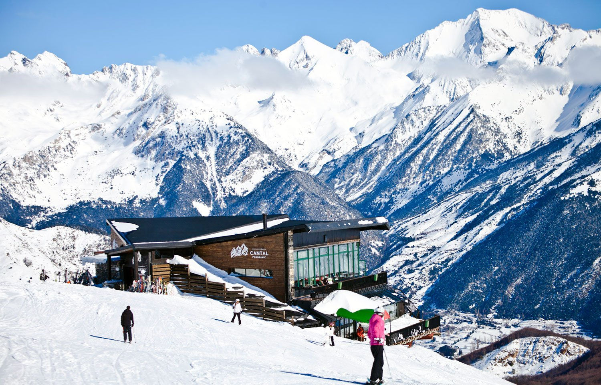
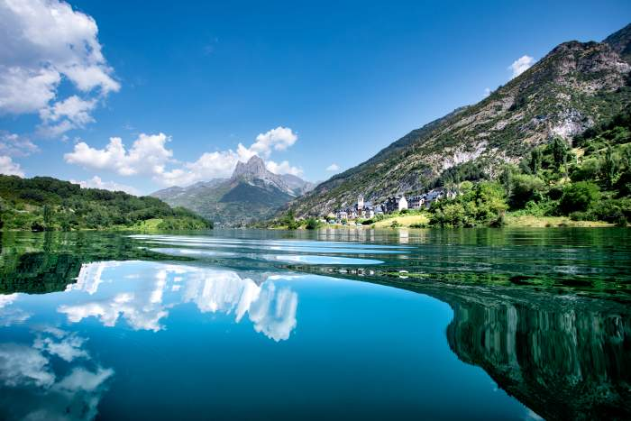

formigal-panticosa
La estación de esquí de Formigal-Panticosa, situada en el Valle de Tena, en el Pirineo aragonés, es una de las más grandes y completas de España, con más de 180 kilómetros de pistas para todos los niveles. Formigal-Panticosa ofrece cuatro valles esquiables y una amplia gama de servicios, incluyendo zonas de freeride, snowparks, áreas para principiantes, y actividades como motos de nieve y trineos. La estación destaca por su moderna infraestructura y su animado ambiente après-ski, convirtiéndose en un destino ideal tanto para esquiadores como para familias y grupos que buscan disfrutar de la nieve en un entorno privilegiado.
valle de tena
El Valle de Tena, situado en el corazón del Pirineo aragonés, es un destino natural impresionante, rodeado de altas montañas, lagos y pueblos tradicionales. Reconocido por su riqueza en actividades al aire libre, como senderismo, esquí y deportes acuáticos, el valle ofrece opciones para todas las temporadas del año. Entre sus principales atractivos están las estaciones de esquí de Formigal-Panticosa, el balneario de Panticosa y sus numerosos senderos, que lo convierten en un lugar ideal para los amantes de la naturaleza y la aventura.